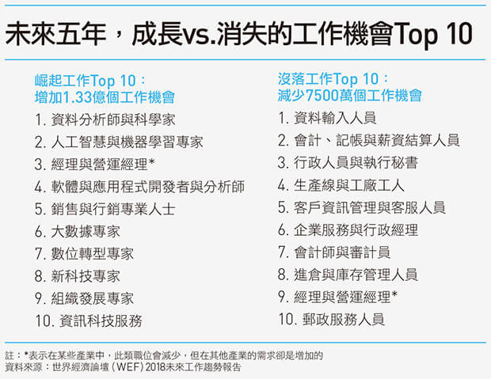
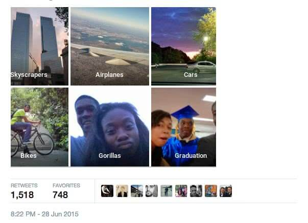
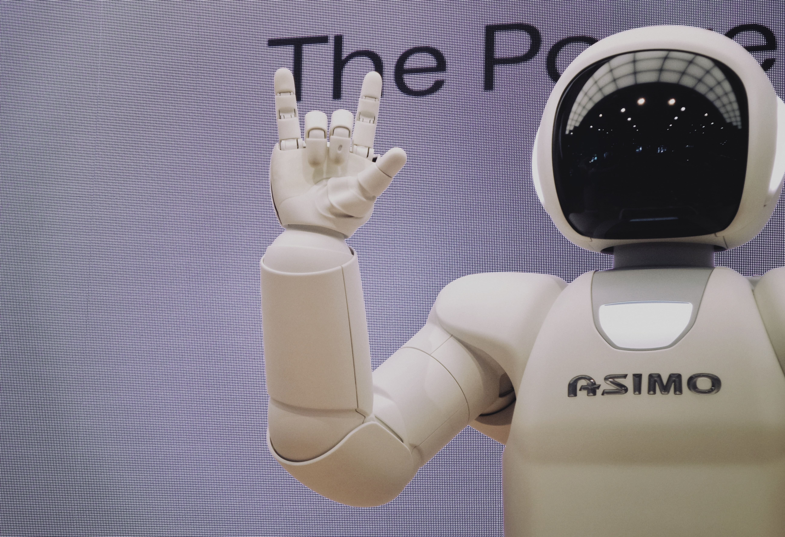

2. 打敗職業資深棋手 - AlphaGo
由英國倫敦Google DeepMind開發的人工智慧圍棋軟體，使用了蒙地卡羅樹搜尋與兩個深度神經網路相結合的方法，其中一個是以估值網路來評估大量的選點，而以走棋網路來選擇落子。在這種設計下，電腦可以結合樹狀圖的長遠推斷，又可像人類的大腦一樣自發學習進行直覺訓練，以提高下棋實力。
何謂人工智慧？即指讓電腦/機器具有和人類的相似行為出現，包含具有學習，推理與判斷解決問題，儲存記憶，瞭解人類所說的語言等能力。
電腦能解決某個需要高度智力才能解決的問題，而不要求它跟人類一樣有全面智慧解決各式各樣不同的問題，例如AlphaGo只會下棋，就是弱AI的一個例子
強人工智慧要求電腦的智慧需要更全面廣泛，需要有推理、學習、規劃、語言溝通、知覺等能力，擁有這些能力的電腦才有可能展現出全面性的智慧、跟人類並駕齊驅。
由香港的漢森機器人技術公司（Hanson Robotics）開發的機器人，具有人工智慧、視覺數據處理和面部識別等功能。在2017年10月，索菲亞成為沙烏地阿拉伯公民，這是世界上第一個獲得國籍的機器人。
由英國倫敦Google DeepMind開發的人工智慧圍棋軟體，使用了蒙地卡羅樹搜尋與兩個深度神經網路相結合的方法，其中一個是以估值網路來評估大量的選點，而以走棋網路來選擇落子。在這種設計下，電腦可以結合樹狀圖的長遠推斷，又可像人類的大腦一樣自發學習進行直覺訓練，以提高下棋實力。
人工智慧在自駕車的常見應用主要物件辨識系統，透過深度學習的架構中的卷積類神經網路訓練自駕車需要的模型，並在車輛部署攝像頭、激光雷達、毫米波雷達等傳感器才能辨識周圍的障礙物，將拍攝到的障礙物轉為矩形並進行迴避。
例如製造業，講求的是效率和標準，機器人相比人類較不會有疲乏的狀況發生，他可以工作24小時動作一樣標準，還有客服人員和司機也是容易被取代的群體之一，在現在的社會自駕車越來越發達，當它開始普及後能減少交通事故率，還能夠計算出走哪條路的時間能夠最少，這個會是自駕車最大的優勢，同時也是未來會造成龐大失業人潮的一大原因。
由於機器是根據人類給出的資料作訓練，若是資料本身就帶有偏見的成分，那麼訓練出來的機器做判斷時就會有錯誤的問題產生。
案例: 麻省理工學院（MIT）的一名研究員指出，由於提供給 AI 訓練資料不夠多樣化，有 3 家著名科技公司的臉部辨識系統在分辨深膚色女性時，都有 20% 以上的出錯率。相反的，可能因為 AI 一開始訓練時即得到大量相關資料，該 3 家系統在辨別淺膚色男性時只有 0.8% 的出錯率。另一個著名的例子是在 2015 年，Google 的影像辨識系統將非裔網友標示為「大猩猩」，隨後為此道歉。很明顯的，兩個例子裡辨識系統皆難以辨別出深膚色的人種，使得 AI 的推斷結果帶有種族歧視。
人類之所以能夠在食物鏈的頂端，不在於人類相較其他物種有強壯的體態或鋒利的牙齒，而是因為人類有所謂的智慧，透過智慧可以創造許多的工具，以獵捕比我們更強壯、速度更快的物種。但是當機器人越來越聰明，人工智慧超越我們的智慧，該如何控制他們？維持人類的統治地位？
